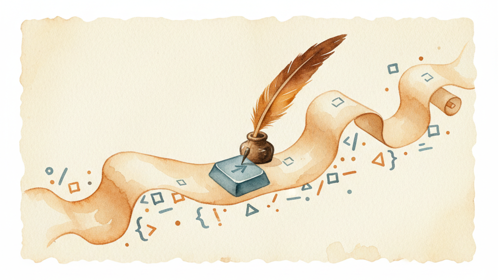

KeyPath can run scripts when you press a key — shell scripts, AppleScript, Python, Ruby, Perl, or Lua. This lets you trigger custom automation from your keyboard: deploy a project, toggle system settings, control apps that don't have keyboard shortcuts, or anything else a script can do.
Script execution is powerful, so it's off by default and guarded by a confirmation system. This guide covers how to enable it, how to use it, and how the security model works.
Scripts are disabled by default. To turn them on:
The confirmation dialog explains what scripts can do — run commands, access files, and make network requests. This is a one-time decision; you can disable it again at any time.
Create a simple script:
#!/bin/bash
# ~/scripts/hello.sh
osascript -e 'display notification "Hello from KeyPath!" with title "Script"'Make it executable:
chmod +x ~/scripts/hello.shNow trigger it from KeyPath using an action URI in your Kanata config:
(push-msg "script:~/scripts/hello.sh")Or test it from Terminal:
open "keypath://script/~/scripts/hello.sh"The first time a script runs, KeyPath shows a confirmation dialog with the script path. You can check "Don't show again" to skip the dialog for future scripts.
KeyPath detects the script type by file extension and runs it with the appropriate interpreter:
| Extension | Interpreter | Notes |
|---|---|---|
.sh |
/bin/bash |
Standard shell scripts |
.bash |
/bin/bash |
Explicit Bash scripts |
.zsh |
/bin/zsh |
Zsh scripts (macOS default shell) |
.py |
/usr/bin/python3 |
Python 3 (probes common paths) |
.rb |
/usr/bin/ruby |
Ruby (ships with macOS) |
.pl |
/usr/bin/perl |
Perl (ships with macOS) |
.lua |
/usr/local/bin/lua |
Lua (Homebrew or manual install) |
.scpt |
Compiled AppleScript | Pre-compiled AppleScript bundles |
.applescript |
Text AppleScript | Plain-text AppleScript source |
Scripts without a recognized extension are executed directly (must be executable).
AppleScript is particularly useful because it can control other Mac apps:
-- ~/scripts/toggle-dark-mode.applescript
tell application "System Events"
tell appearance preferences
set dark mode to not dark mode
end tell
end tell;; In your Kanata config:
(push-msg "script:~/scripts/toggle-dark-mode.applescript")More examples:
-- Open a specific URL in Safari
tell application "Safari" to open location "https://github.com"
-- Resize the frontmost window
tell application "System Events"
tell process (name of first application process whose frontmost is true)
set size of window 1 to {1200, 800}
end tell
end tell
-- Toggle Do Not Disturb (macOS 12+)
do shell script "shortcuts run 'Toggle Focus'"#!/bin/bash
# ~/scripts/deploy.sh
cd ~/Projects/myapp
git push origin main
osascript -e 'display notification "Deployed!" with title "Deploy"'#!/bin/bash
# ~/scripts/toggle-bluetooth.sh
if blueutil --power | grep -q "1"; then
blueutil --power 0
osascript -e 'display notification "Bluetooth off" with title "Bluetooth"'
else
blueutil --power 1
osascript -e 'display notification "Bluetooth on" with title "Bluetooth"'
fi#!/bin/bash
# ~/scripts/open-project.sh
open -a "Visual Studio Code" ~/Projects/myapp#!/usr/bin/env python3
# ~/scripts/timestamp-clip.py
import subprocess, datetime
ts = datetime.datetime.now().strftime("%Y-%m-%d %H:%M")
subprocess.run(["pbcopy"], input=ts.encode())Two equivalent ways to reference a script:
| Context | Syntax | Example |
|---|---|---|
| Kanata config | Shorthand | script:~/scripts/hello.sh |
| Deep link | Full URI | keypath://script/~/scripts/hello.sh |
Tilde (~) is expanded to your home directory. Paths with spaces work when URL-encoded in the full URI format.
Script execution has three layers of protection:
Script execution is off by default. Nothing runs until you explicitly enable it in Settings. You can disable it at any time to block all script execution instantly.
The first time any script runs, KeyPath shows a confirmation dialog:
┌─────────────────────────────────────────────────┐
│ ⚠️ Script Execution │
│ │
│ ~/scripts/hello.sh │
│ │
│ This script can: │
│ • Execute system commands │
│ • Read and write files │
│ • Access the network │
│ • Control other applications │
│ │
│ ☐ Don't show this warning again │
│ │
│ [ Cancel ] [ Run Script ] │
└─────────────────────────────────────────────────┘Check "Don't show again" only if you trust all scripts you'll run. This bypasses the dialog for future scripts.
KeyPath logs every script execution — path, timestamp, success/failure, and any errors. View the log in Settings > Script Execution > View Execution Log.
The most common pattern: bind a script to a key on a navigation layer or through the Quick Launcher.
;; In your Kanata config, on the nav layer:
(push-msg "script:~/scripts/deploy.sh")# Trigger a script directly
open "keypath://script/~/scripts/hello.sh"Use the "Send KeyPath Action" Shortcut with the URI keypath://script/~/scripts/hello.sh.
keypath:// action types